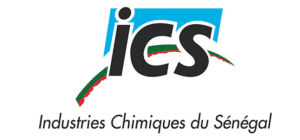
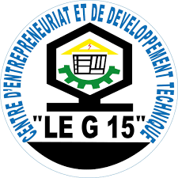
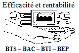

Gauche : Expériences Pro
Droite : Formation
Fév. 2024 - Aujourd'hui
Apprenti Ingénieur SWIFT chez Ecobank
Missions Principales :
- Projet Stratégique ISO 20022 : Participation active à la migration des messages MT vers MX (CBPR+).
- Administration SWIFT : Gestion quotidienne de l'infrastructure SAA et SAG.
- Sécurité & Compliance : Administration des outils de filtrage SIRON.
- Supervision (Monitoring) : Mise en place de KPI pour le suivi des flux transactionnels.
2023 - 2026
Master Architecte Cloud à ESIEA
- Architecture Cloud, DevSecOps, Blockchain, Réseaux Avancés.
Août 2023 - Fév. 2024
Stage IT SWIFT chez Ecobank
- Support Niveau 1/2, Monitoring des Flux, Projet SIEM.
2022 - 2023
Bachelor SI à ESIEA
- Administration Système (Linux/Windows), Virtualisation.
Fév. 2022 - Juin 2022
Stage IoT chez EmC2 Group
- Prototypage Arduino, Électronique, Développement C++/Python.

Mars 2020 - Avril 2020
Technicien Instrumentiste chez ICS Indorama
- Maintenance Régulation, Actionneurs, Électronique de Puissance.

2016 - 2018
BTS Électronique Industrielle au CEDT Le G15
- Automatisme (API), Électronique, Énergie.
